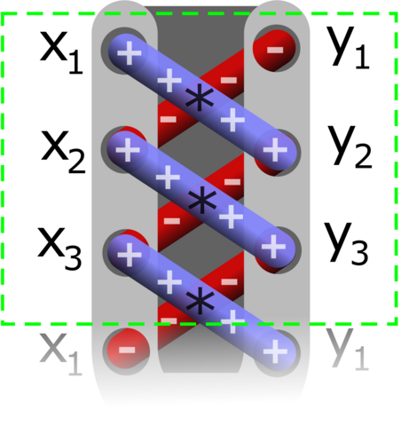
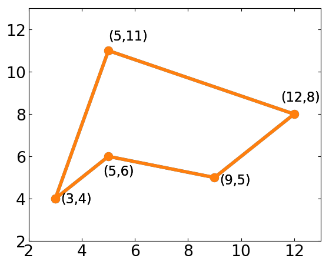

Ejercicios
Ejercicios de Clase 01
Abra una terminal (consola) o notebook y utilícela como una calculadora para realizar las siguientes acciones:
Suponiendo que, de las cuatro horas de clases, tomamos dos descansos de 15 minutos cada uno y nos distraemos otros 13 minutos, calcular cuántos minutos efectivos de trabajo tendremos en las 16 clases.
Para la cantidad de alumnos presentes en el aula: ¿cuántas horas-persona de trabajo hay involucradas en este curso?
Muestre en la consola de Ipython:
el nombre de su directorio actual
los archivos en su directorio actual
Cree un subdirectorio llamado
tmpsi está usando linux, muestre la fecha y hora
Borre el subdirectorio
tmp
Para cubos de lados de longitud L = 1, 3, y 5: calcule su superficie y su volumen.
Para esferas de radios r = 1, 3, 5 y 8, calcule su superficie y su volumen.
Fíjese si alguno de los valores: \(x=0.49\), \(x=0.50\), \(x=0.51\) es un cero de la función \(f(x)=x^{2} + x/2 - 1/2\).
Para el número complejo \(z= 1 + 0.5 i\)
Calcular \(z^2, z^3, z^4, z^5.\)
Calcular los complejos conjugados de \(z\), \(z^2\) y \(z^3\).
Escribir un programa que escriba las frases:
“El conjugado de z=1+0.5i es 1-0.5j”
“El conjugado de z=(1+0.5i)^2 es …” (con el valor correspondiente)
Ejercicios de Clase 02
Escriba funciones que calculen:
El volumen de una esfera
El volumen de una caja de lados
L1,L2,L3
Escriba una función que tome como argumentos tres valores:
a,b,cy calcule los ceros (raíces) del polinomio \(a x^{2} + b x + c\).Considere un polígono regular de \(N\) lados inscripto en un círculo de radio unidad:
Escriba una función que tome como argumento el número de lados \(N\) y calcule el ángulo interior del polígono regular correspondiente (por ejemplo el de un triángulo es 60 grados, de un cuadrado es 90 grados, y de un pentágono es 108 grados). Pruebe su función para valores de \(N= 3, 5, 6, 8, 9, 10, 12\).
¿Puede calcular la longitud del lado de los polígonos regulares si se encuentran inscriptos en un círculo de radio unidad?
En todos los casos, pruebe las funciones escritas
Para la cadena de caracteres:
s = '''Aquí me pongo a cantar
Al compás de la vigüela,
Que el hombre que lo desvela
Una pena estraordinaria
Como la ave solitaria
Con el cantar se consuela.'''
Forme un nuevo string de 10 caracteres que contenga los 5 primeros y los 5 últimos del string anterior
s. Imprima por pantalla el nuevo string.Forme un nuevo string que contenga los 10 caracteres centrales de
s(utilizando un método que pueda aplicarse a otros strings también). Imprima por pantalla el nuevo string.Cuente la cantidad de veces que aparecen los substrings
es,la,que,co, en los siguientes dos casos: distinguiendo entre mayúsculas y minúsculas, y no distinguiendo. Imprima el resultado.Cambie todas las letras “m” por “n” y todas las letras “n” por “m” en
s. Imprima el resultado por pantalla.
Utilizando funciones y métodos de strings en la cadena de caracteres:
s1='En un lugar de la Mancha de cuyo nombre no quiero acordarme'
Obtenga la cantidad de caracteres.
Imprima la frase anterior pero con cada palabra empezando en mayúsculas.
Cuente cuantas letras ‘a’ tiene la frase, ¿cuántas vocales tiene?
Centrado manual de frases
Utilizando la función
len()centre una frase corta en una pantalla de 80 caracteres. Utilice la frase: “Un ejercicio con cadena de caracteres”Agregue subrayado a la frase anterior
Escriba una función que centre y subraye una frase dada como argumento. Se espera obtener algo así:
Un ejercicio con cadena de caracteres -------------------------------------
Repita el punto anterior utilizando métodos de strings
Para Entregar: Manejos de listas:
Cree la lista N de longitud 50, donde cada elemento es un número entero de 1 a 50 inclusive (Ayuda: vea la expresión
range).Invierta la lista.
Extraiga de N una lista N1 que contenga sólo aquellos elementos que sean el cuadrado de algún número entero.
Extraiga de N una lista N2 que contenga sólo aquellos elementos que sean iguales al \(n^2-n\) para algún número entero \(n\).
Ayuda: Puede resultar útil recordar el uso de comprensión de listas.
Debe enviar por correo electrónico, con asunto “02_Suapellido”, un programa llamado 02_SuApellido.py (en todos los casos utilice su apellido, no la palabra “SuApellido”).
Cree una lista de la forma
L = [1,3,5,...,17,19,19,17,...,3,1](Ayuda: vea la expresiónrange).Escriba una función que tome un número entero de tres cifras, y devuelva el mayor entero que se puede formar con esas cifras (Ayuda: considere convertir el número entero a otros tipos).
Construya una lista
L2con 2000 elementos, todos iguales a0.0005. Imprima su suma utilizando la funciónsumy comparar con el resultado que arroja la función que existe en el módulomathpara realizar suma de números de punto flotante.Operación “rara” sobre una lista:
Defina la lista
L = [0,1]Realice la operación
L.append(L)Ahora imprima L, e imprima el último elemento de
L.Haga que una nueva lista
L1tenga el valor del último elemento deLy repita el inciso anterior.
Ejercicios de Clase 03
Escribir, utilizando conjuntos (
set), funciones que tomen como argumento un string y:Retorne verdadero si el argumento tiene algún número, Falso en otro caso,
Retorne verdadero si el argumento está formado por todos números, Falso en otro caso.
De los primeros 100 números naturales imprimir aquellos que no son divisibles por ninguno de: 2, 3, 5 o 7.
Usando estructuras de control, calcule el valor de la suma:
\[s_{1} = \frac{1}{2} \left(\sum_{k=1}^{100}k^{-1} \right)\]para los casos:
Incluyendo todos los valores de
kIncluyendo únicamente los valores pares de
k.
Escriba una función que estime la suma
\[s_{2} = \sum_{k=1}^{\infty} \frac{(-1)^{k} (k+1)}{2 k^{3} + k^{2}}\]La función toma como argumentos un error relativo \(\epsilon\) deseado y devuelve el valor de la suma y el error relativo estimado. Pruebe su función para un valor \(\epsilon=10^{-5}\)
Escriba una función que tome como argumento un párrafo de texto y devuelva un string con el párrafo en un “cartel” de un cierto ancho:
cartelizar(parrafo, ancho)
Por ejemplo, para el texto:
s = "Ullam vel totam cum neque exercitationem ut. Quae omnis rerum sit reprehenderit accusamus. Molestiae molestiae sit totam sint. Neque pariatur temporibus ut minima accusantium. Ad perferendis natus nisi dolor. Et sint maiores exercitationem reiciendis ut ab et." sout = cartelizar(s, 60)
debe devolver el string:
sout = '* ******************************************************** *\n* Ullam vel totam cum neque exercitationem ut. Quae omnis *\n* rerum sit reprehenderit accusamus. Molestiae molestiae *\n* sit totam sint. Neque pariatur temporibus ut minima *\n* accusantium. Ad perferendis natus nisi dolor. Et sint *\n* ******************************************************** *'
que al imprimirlo se verá:
print(sout)
* ******************************************************** * * Ullam vel totam cum neque exercitationem ut. Quae omnis * * rerum sit reprehenderit accusamus. Molestiae molestiae * * sit totam sint. Neque pariatur temporibus ut minima * * accusantium. Ad perferendis natus nisi dolor. Et sint * * ******************************************************** *
En 1949, D. R. Kaprekar, un matemático de la India especializado en matemática recreacional, describió un algoritmo que consiste en:
Tomar un número de cuatro cifras
Reacomodar las cifras para obtener el mayor número posible
Obtener reacomodando las cifras también el menor posible
Restarlos
GOTO 1
Este algoritmo tiene un “punto fijo” igual a 6174 y es al que el algoritmo llega si se inicia con un número que no tiene las cifras repetidas. Si alguna cifra es repetida el punto fijo puede ser el trivial, igual a cero. Escribir una función
rutina_kaprekar(numero)que tome un número de cuatro cifras y devuelva el punto fijo y el número de números necesarios hasta alcanzarlo.Por ejemplo: Para el número 1392, la secuencia es:
1392 -> 8082 -> 8532 -> 6174 -> 6174 -> …
por lo que tendremos al aplicar la función:
rutina_kaprekar(1392)
6174, 4
Consejo
Tenga en cuenta que si un número tiene menos de cuatro cifras
debe agregarle ceros. Por ejemplo el número 978 debe entenderse como
0978 por lo que el mayor número que puede escribirse con estas
cifras es 9870.
Ejercicios de Clase 04
Un método para calcular el área de un polígono (no necesariamente regular) que se conoce como fórmula del área de Gauss o fórmula de la Lazada (shoelace formula) consiste en describir al polígono por sus puntos en un sistema de coordenadas. Cada punto se describe como un par \((x,y)\) y la fórmula del área está dada mediante la suma de la multiplicación de los valores en una diagonal a los que se le resta los valores en la otra diagonal, como muestra la figura
\[2 A = (x_{1} y_{2} + x_{2} y_{3} + x_{3} y_{4} + \dots) - (x_{2} y_{1} + x_{3} y_{2} + x_{4} y_{3} + \dots)\]Utilizando una descripción adecuada del polígono, escribir una función que implemente la fórmula de Gauss para calcular su área y aplicarla al ejemplo de la figura.
Verificar que el resultado no depende del punto de inicio.